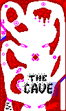
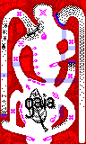
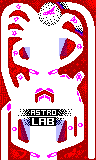
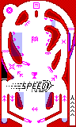

Acelgoyobis Tables
Overview
These are the ‘factory’ tables originally supplied with the game. If you want to build your own set, you can also learn a lot from them besides the design guide. The xagt sources are available in the distribution. But now, let’s see a brief description of the quests!
The Cave

- Death Gate: a gate initially closing the way to the pit on the bottom left.
- opened by hitting the circle on the right lane
- closed by hitting the square on the top left
- Multiplier: hit the four sides of the diamond in the middle, then a plus sign appears in a circle in the shortcut of the top left corner. Hitting the plus sign increases the bonus multiplier by one.
- Pearls: hit the pearls on the top part for some points
- Left lane targets: same as pearls
- Mask ride:
- clearing the cavity next to the notice ‘The Cave’ makes a torch appear
- hitting the torch makes a coin appear on the topmost lane
- hitting the coin makes the gadgets in the cavity reappear, and the fifth coin reveals the mask on the left and opens its way
- collecting the mask closes its gate and gets you a lot of points
- Rubber surfaces: the wall near the letter ‘E’, above the right flipper
Gaia

- Series: there are three series of identical objects visible; hitting them gives you some points and only clearing them each makes them reappear
- Flower race: there are 7 flowers on the table, but only one is visible at a time; initially this is on the inner left lane connecting the top and the bottom; hitting one makes the next one appear, but failing to hit each of them in a certain time after the previous one returns the initial state. Successive flowers are worth more and more, and some reveal some extra targets that don’t diminish with time:
- the 4th one activates the apple (extra score)
- the 5th one activates the grape (extra score)
- the 6th one activates the pear (extra score)
- the 7th one gives you an extra bonus multiplier besides a lot of points
- Multiplier: the standard way to get the multiplier is to shoot the ball up through the right lane (right next to the launching lane), having it fall down on the lane with the first flower without falling down first through any other place. This reveals the multiplier indicated by a blinking arrow. If you get the ball to the top part on a different lane, the target disappears before you can collect it.
- Rubber surfaces: the upper half of the wall piece surrounded by the bottom right corner
Astrolab

- Multiplier: clear the five rocks in the top part, and a diamond-shaped mineral appears in the hole next to the left lane. Hit it for an increased multiplier.
- Astronaut: get the three capsules in the vertical lanes of the bottom part, and you can collect the astronaut in the rightmost hole.
- Derelict: hit all the four pieces next to the astronaut’s hole. When done, the scout ship in the centre will be equipped. Hit all the four pieces of equipment, and a transport ship appears in the lane next to the starting pipe. Collecting the transport reveals the derelict in the top part. Just hit it and you’re set.
- Trap: there is a trap on the left with a gate that’s periodically opened and closed. Avoid it when the gate is hidden, otherwise you can easily lose your ball.
- Rubber surfaces: the bumpers above each flipper
Speed (by Maarten Zwartbol)

- Speeding Ticket: collect all the arrows on the bottom to activate the Speeding Ticket! If you fail to collect the Speeding Ticket within some seconds.... it will be deactivated.
- Tire: there are 4 spikestrips located on the table. Collecting all the spikestrips will activate the Tire. If you fail to collect the Tire within some seconds.... it will be deactivated.
- Small Suspension Quest: collect the shards lying on the surface of the left ‘bumper’ to activate the small suspension gizmo on the right. If you collect the small suspension gizmo by entering the lane from the top the quest will be deactivated. So only enter the lane trough the bottom 2 entrances.
- Big Suspension Quest: if you finished the Small Suspension Quest the shards on the right bumper will be activated. Collecting these shards will activate the big suspension gizmo in the left lane.
- Fast Lap: if you go round the whole top lane (enter from left, exit on right) you will collect some points. If you pick up the Flag which will be activated you gain a lot more points. If you fail to collect the Flag within some seconds.... surprise, it will be deactivated.
- Multiplier: if you finished 10 quests the Cup will be activated. Collecting it will increase your Bonus multiplier and give you a lot of points! If you fail to collect the Cup, once activated, within some seconds... guess what happens.
- Rubber surfaces: the bumpers above each flipper and the holes to the left and right of the flippers.